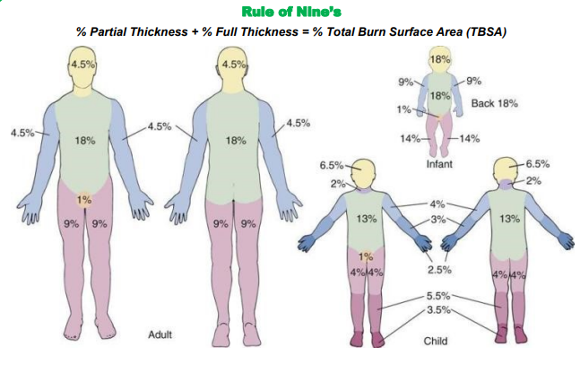

| History | Signs and Symptoms | Differential |
|---|---|---|
|
• Type of exposure (heat, gas, chemical) • Inhalation injury • Time of injury • Past medical history • Medications • Other trauma • Loss of consciousness |
• Burns, pain, swelling • Dizziness • Loss of consciousness • Hypotension / Shock • Airway compromise / distress • Singed facial or nasal hair • Hoarseness / Wheezing |
• Superficial (1st Degree) red and painful • Partial Thickness (2nd Degree) blisters • Full Thickness (3rd Degree) painless/ charred or leathery skin • Thermal burns • Chemical burns • Electrical burns • Radiation injury |
General Treatment:
1. Assure scene and rescuer safety.
2.
INITIAL TRAUMA CARE.
3. Expose the burned area and remove any rings, bracelets or other
constricting items.
4. Estimate Total Body Surface Area (TBSA) and depth of burn.
a. Use
“Rule of 9’s”.
b. First-degree (superficial) burns (skin erythema only) are not
included in TBSA calculations.
c. The patient’s palm is roughly equal to 1% body surface area which
can also be used in estimating the percent of the body surface that
is burned.
5. If evidence of possible airway burn (burns around face, nares or
pharynx), consider aggressive airway management per the
AIRWAY MANAGEMENT
Protocol.
6. Evaluate distal circulation in circumferentially burned
extremities.
7. Prevent systemic heat loss and keep the patient warm.
8. Relay information to incoming ambulance and/or call for intercept
per
INTERCEPT CRITERIA.
Thermal Burns:
1. Stop the burning process with sterile water or normal saline.
a. Remove non-adherent clothing and jewelry.
b. Leave blisters intact.
2. Minimize burn wound contamination.
a. Cover burns with dry dressing or clean sheet.
b. Do not apply gels or ointments.
3. Consider Carbon Monoxide and/or Cyanide poisoning in patients with
smoke inhalation. Refer to
CARBON MONOXIDE / SMOKE INHALATION
and
CYANIDE POISONING
Protocols.
Chemical Burns:
1. If dry chemical contamination, carefully brush off solid chemical
prior to flushing the site.
2. If wet chemical contamination, flush the patient’s skin (and eyes,
if involved) with copious amounts of water or normal saline.
3. For eye exposure, administer continuous flushing of Normal Saline
fluid to eye.
Electrical Burns:
1. Verify scene safety and ensure that the electrical source is
disabled prior to assessment.
2. Assess for visible entrance and exit wounds and treat as thermal
burns.
1. Continue EMR & BLS TREATMENT.
2. Apply cardiac monitor and assess for dysrhythmias, especially in
electrical injuries.
3. Establish IV access. Avoid placement through burned skin.
4. Administer
Isotonic IV Fluid (500 mL bolus or 1-2mL/kg x %BSA burn over 8
hours)
Example: (((2mLx100kg) x 30%))/8)=750 ml/hr. Lactated Ringers is
preferred over normal saline.
PARKLAND FORMULA
5. Consider the need for an advanced airway if signs of inhalation
injury (burns around face, nares or pharynx) are present per the
AIRWAY MANAGEMENT
Protocol.
Consider early management of pain per the
PAIN MANAGEMENT
Protocol

PEARLS
• Onset of stridor and change in voice are sentinel signs of
potentially significant airway burns, which may rapidly lead to airway
obstruction or respiratory failure. Early intubation is required in
significant inhalation injuries.
• EtCO2 monitoring may be particularly useful to monitor respiratory
status in patients receiving significant doses of narcotic pain
medication.
• Particularly in enclosed-space fires, carbon monoxide toxicity is a
consideration and pulse oximetry may not be accurate.
• Cardiac monitor is important in electrical burns and chemical
inhalations.
• Have a high index of suspicion for cyanide poisoning in a patient
with depressed GCS, respiratory difficulty and cardiovascular collapse
in the setting of an enclosed-space fire. Give the antidote
(hydroxocobalamin), if available, in this circumstance.
• Pain management is critical in acute burns.
• TBSA is calculated only based on percent of second (partial
thickness) and third degree (full thickness) burns – First degree
(superficial) burns are not included in this calculation.
• Burn patients are prone to hypothermia—never apply ice or cool burns
that involve > 10% TBSA.
• Burn patients are trauma patients; evaluate for multisystem
trauma.
• Anticipate atrial and/or ventricular dysrhythmias as well as cardiac
arrest with electrical injuries.
• The mortality related to electrical injuries is impacted by several
factors:
a. Route current takes through the body – current traversing the
heart has higher mortality.
b. Type of current – AC vs. DC
i. AC is more likely to cause cardiac dysrhythmias while DC is
more likely to cause deep tissue burns however either type of
current can cause any injury.
ii. DC typically causes one muscle contraction while AC can cause
repeated contractions.
iii. Both types of current can cause involuntary muscle
contractions that do not allow the victim to let go of the
electrical source.
iv. AC is more likely to cause ventricular fibrillation while DC
is more likely to cause asystole.
• For chemical burns: Normal Saline or Sterile Water is preferred,
however if not available, do not delay irrigation and use tap water.
Other water sources may be used based on availability. Flush the area
as soon as possible with the cleanest readily available water or
saline solution using copious amounts of fluids.
| KEY DOCUMENTATION ELEMENTS | PERTINENT ASSESSMENT FINDINGS |
|---|---|
|
• Initial airway status • Total volume of fluid administered • TBSA of second and third degree burns • Pulse and capillary refill exam distally on any circumferentially burned extremity • Pain management |
• Consider related trauma in addition to burns • Consider inhalation exposures such as CO and CN • If evidence of possible airway burn, consider aggressive airway management • Estimate TBSA burned and depth of burn |
| QUALITY METRICS |
|
• Patient transported to most appropriate hospital • Pain appropriately managed • Airway assessment and early and aggressive management, especially with burns to face, nares or pharynx |